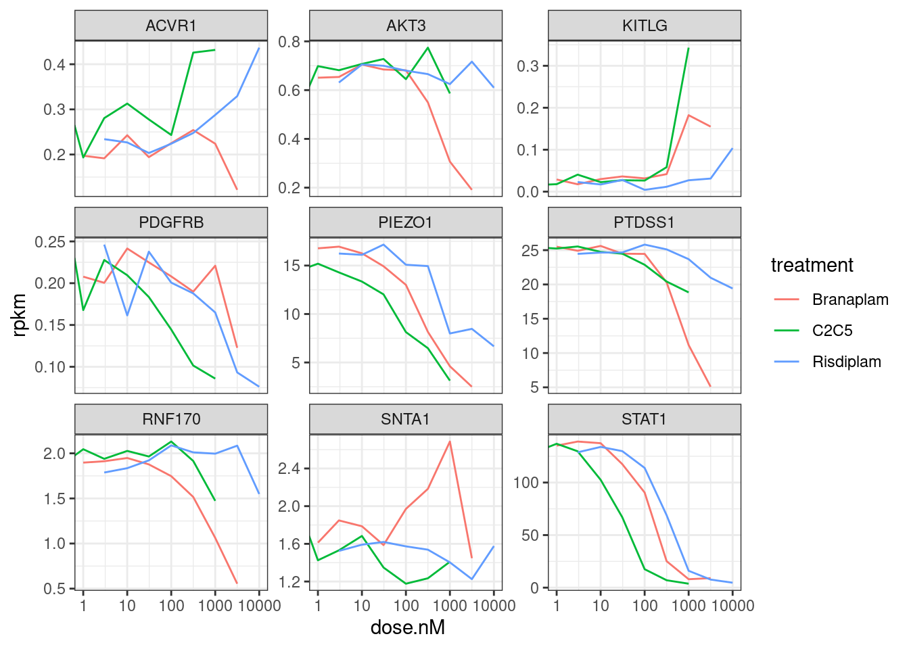
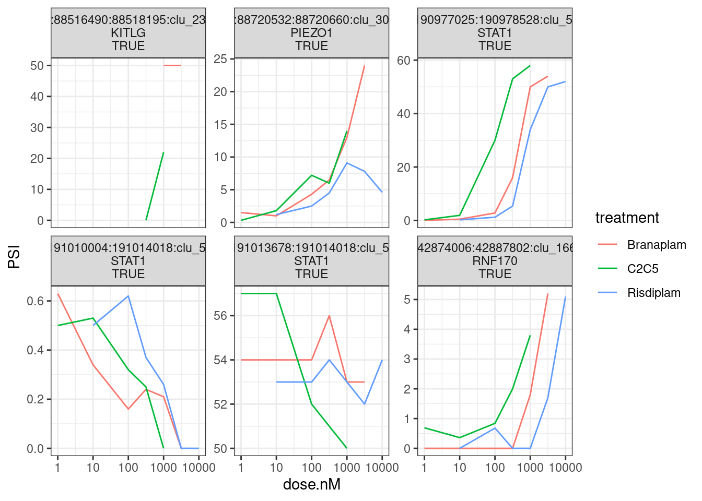
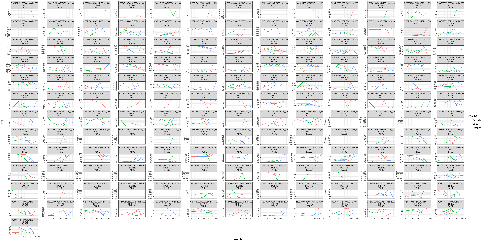
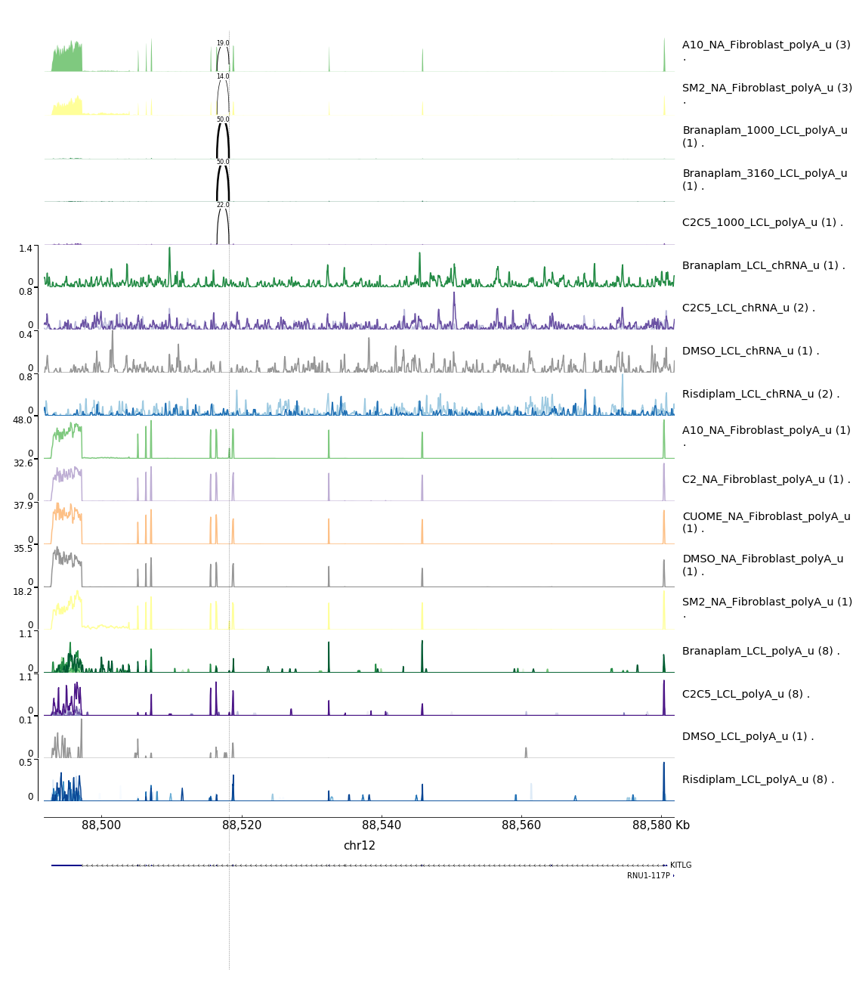
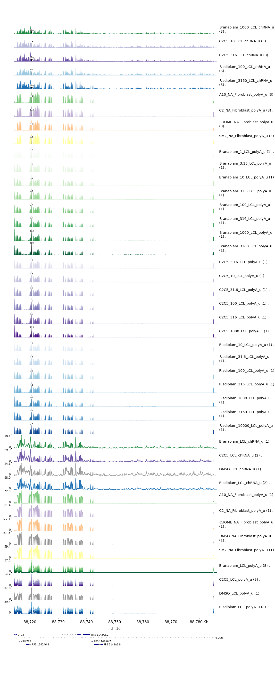
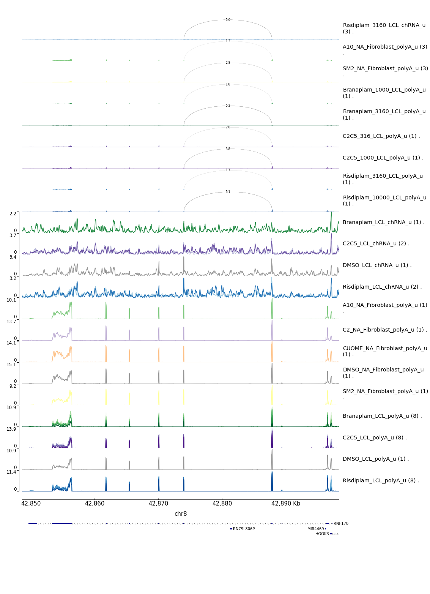
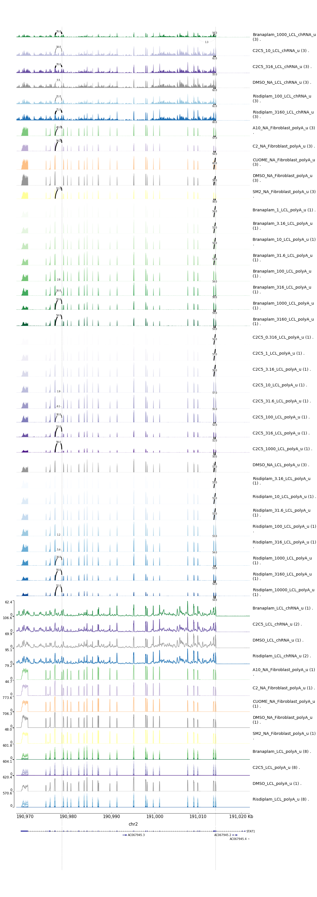
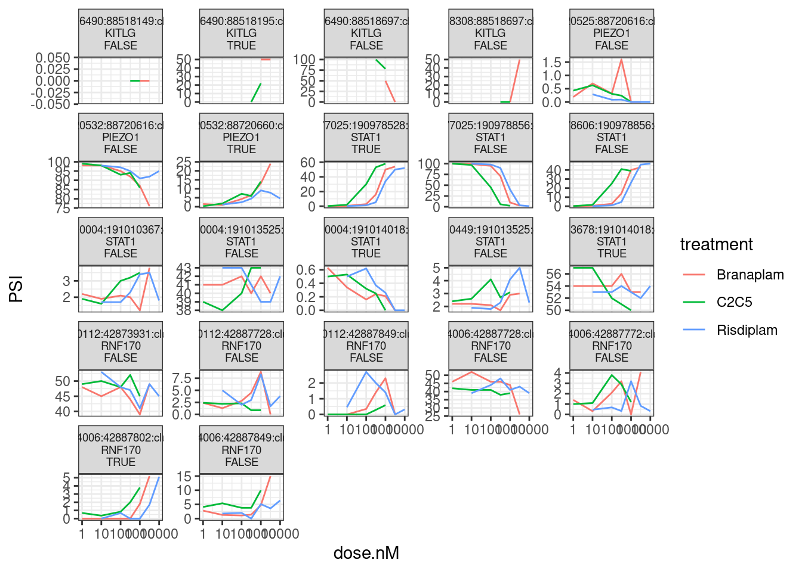
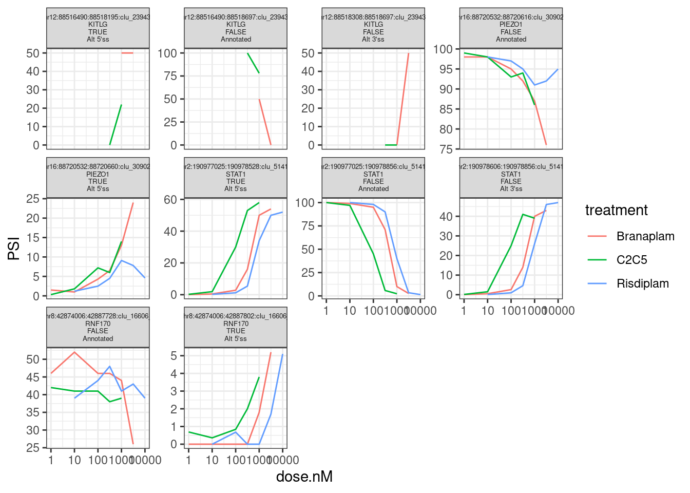

Last updated: 2022-09-08
Checks: 5 2
Knit directory: 20211209_JingxinRNAseq/analysis/
This reproducible R Markdown analysis was created with workflowr (version 1.6.2). The Checks tab describes the reproducibility checks that were applied when the results were created. The Past versions tab lists the development history.
The R Markdown is untracked by Git. To know which version of the R Markdown file created these results, you’ll want to first commit it to the Git repo. If you’re still working on the analysis, you can ignore this warning. When you’re finished, you can run wflow_publish to commit the R Markdown file and build the HTML.
Great job! The global environment was empty. Objects defined in the global environment can affect the analysis in your R Markdown file in unknown ways. For reproduciblity it’s best to always run the code in an empty environment.
The command set.seed(19900924) was run prior to running the code in the R Markdown file. Setting a seed ensures that any results that rely on randomness, e.g. subsampling or permutations, are reproducible.
Great job! Recording the operating system, R version, and package versions is critical for reproducibility.
Nice! There were no cached chunks for this analysis, so you can be confident that you successfully produced the results during this run.
Using absolute paths to the files within your workflowr project makes it difficult for you and others to run your code on a different machine. Change the absolute path(s) below to the suggested relative path(s) to make your code more reproducible.
| absolute | relative |
|---|---|
| /project2/yangili1/bjf79/20211209_JingxinRNAseq/code/bigwigs/unstranded/(.+?).bw | ../code/bigwigs/unstranded/(.+?).bw |
Great! You are using Git for version control. Tracking code development and connecting the code version to the results is critical for reproducibility.
The results in this page were generated with repository version db9a4f0. See the Past versions tab to see a history of the changes made to the R Markdown and HTML files.
Note that you need to be careful to ensure that all relevant files for the analysis have been committed to Git prior to generating the results (you can use wflow_publish or wflow_git_commit). workflowr only checks the R Markdown file, but you know if there are other scripts or data files that it depends on. Below is the status of the Git repository when the results were generated:
Ignored files:
Ignored: .DS_Store
Ignored: .Rhistory
Ignored: .Rproj.user/
Ignored: ._.DS_Store
Ignored: analysis/.RData
Ignored: analysis/.Rhistory
Ignored: analysis/20220707_TitrationSeries_DE_testing.nb.html
Ignored: code/.DS_Store
Ignored: code/._.DS_Store
Ignored: code/._DOCK7.pdf
Ignored: code/._DOCK7_DMSO1.pdf
Ignored: code/._DOCK7_SM2_1.pdf
Ignored: code/._FKTN_DMSO_1.pdf
Ignored: code/._FKTN_SM2_1.pdf
Ignored: code/._MAPT.pdf
Ignored: code/._PKD1_DMSO_1.pdf
Ignored: code/._PKD1_SM2_1.pdf
Ignored: code/.snakemake/
Ignored: code/5ssSeqs.tab
Ignored: code/Alignments/
Ignored: code/ChemCLIP/
Ignored: code/ClinVar/
Ignored: code/DE_testing/
Ignored: code/DE_tests.mat.counts.gz
Ignored: code/DE_tests.txt.gz
Ignored: code/Fastq/
Ignored: code/FastqFastp/
Ignored: code/FragLenths/
Ignored: code/Meme/
Ignored: code/Multiqc/
Ignored: code/OMIM/
Ignored: code/OldBigWigs/
Ignored: code/QC/
Ignored: code/Session.vim
Ignored: code/SplicingAnalysis/
Ignored: code/TracksSession
Ignored: code/bigwigs/
Ignored: code/featureCounts/
Ignored: code/geena/
Ignored: code/igv_session.template.xml
Ignored: code/igv_session.xml
Ignored: code/log
Ignored: code/logs/
Ignored: code/scratch/
Ignored: code/scripts/.DS_Store
Ignored: code/test.txt.gz
Ignored: code/testPlottingWithMyScript.ForJingxin.sh
Ignored: code/testPlottingWithMyScript.ForJingxin2.sh
Ignored: code/testPlottingWithMyScript.sh
Ignored: data/._Hijikata_TableS1_41598_2017_8902_MOESM2_ESM.xls
Ignored: data/._Hijikata_TableS2_41598_2017_8902_MOESM3_ESM.xls
Ignored: output/._PioritizedIntronTargets.pdf
Untracked files:
Untracked: analysis/20220804_MakeBigwigListTsv.Rmd
Untracked: analysis/20220809_geena.Rmd
Untracked: analysis/20220822_Check_chRNA.Rmd
Untracked: analysis/20220907_IdentifyTargetsForVerification.Rmd
Untracked: code/scripts/Collapse_Juncfiles.R
Untracked: data/Hijikata_Table2_combined.csv
Untracked: data/Risdplam_Branaplam_specific_exons 5'ss.xlsx
Untracked: output/FibroblastOMIM_GOF_Downregulated_AndCrypticSpliced_GeneList.tsv
Unstaged changes:
Modified: analysis/20211216_DifferentialSplicing.Rmd
Modified: analysis/20220629_FirstGlanceTitrationSeries.Rmd
Modified: analysis/20220712_FitDoseResponseModels.Rmd
Modified: analysis/20220726_Check_chRNATestSeq.Rmd
Modified: code/Snakefile
Modified: code/config/config.yaml
Modified: code/config/samples.chRNAPilotSequencing.tsv
Modified: code/rules/Process_chRNA.smk
Modified: code/rules/RNASeqProcessing.smk
Modified: code/rules/common.smk
Modified: code/scripts/GenometracksByGenotype
Modified: output/QC/ReadCountsAndJunctionsPerSamples.tsv
Staged changes:
Modified: .gitmodules
New: code/scripts/GenometracksByGenotype
Note that any generated files, e.g. HTML, png, CSS, etc., are not included in this status report because it is ok for generated content to have uncommitted changes.
There are no past versions. Publish this analysis with wflow_publish() to start tracking its development.
Yang shared with me a message from Jingxin:
- We are now designing lots of splicing assays. Previously, Ben provided 9 genes that are related to pathogenic gain-of-function mutations. I believe the analysis is based on our previous fibroblast result. We will need the coordinates of the AS events in these 9 genes. I hope that this can be done before next Tuesday (our next order for DNAs). 1 AKT3 MEGALENCEPHALY-POLYMICROGYRIA-POLYDACTYLY-HYDROCEPHALUS SYNDROME … 2 ACVR1 FIBRODYSPLASIA OSSIFICANS PROGRESSIVA; FOP
3 STAT1 IMMUNODEFICIENCY 31C; IMD31C
4 PDGFRB MYOFIBROMATOSIS, INFANTILE, 1; IMF1
5 RNF170 ATAXIA, SENSORY, 1, AUTOSOMAL DOMINANT; SNAX1
6 PTDSS1 LENZ-MAJEWSKI HYPEROSTOTIC DWARFISM; LMHD
7 KITLG HYPERPIGMENTATION WITH OR WITHOUT HYPOPIGMENTATION, FAMILIAL PROG… 8 PIEZO1 DEHYDRATED HEREDITARY STOMATOCYTOSIS 1 WITH OR WITHOUT PSEUDOHYPE… 9 SNTA1 LONG QT SYNDROME 12; LQT12
- The most intriguing part of the dose-response (DR) study is the selectivity difference between risdiplam and branaplam. Due to the similarity between risdiplam and C2-C5-1, we can even leave C2-C5-1 out for simplicity. We need a list of more genes that are (a) risdiplam selective and (b) branaplam selective, with complete coordinates. The criteria I can think of are as follows:
- Number of validated reads (leave the low-quality DR curves out).
- EC50 difference. This can be defined by delta Psi at a certain concentration (or an average of a few concentrations).
- Only consider exon inclusion in the presence of drugs.
Let’s start with point #1. Previously, based on the fibroblast RNA-seq data (cells treated with either A10, C2, CUOME, or SM2), I made a short list of genes that are OMIM genes annotated as gain-of-function or dominant-negative, which also in the RNA-seq are observed to be downregulated by treatment and also contain a detected significantly upregulated unannotated (cryptic 3’ss, or cryptic 5’ss) splice junction. It is not totally clear whether the significant detected upregulated junction is the causal mechanism for downregulation (eg like the poison exon in HTT), or whether the detected intron is a GA|GT intron, etc. To accomplish Jingxin’s point number one, I will manually inspect that list of 10 genes, looking for the hypothesized causal splice junction that creates a NMD-target transcript. Here I will show my work on how I go about this:
#load libraries
library(tidyverse)
library(edgeR)
#Read in short list of genes
genes.to.plot <- read_tsv("../output/FibroblastOMIM_GOF_Downregulated_AndCrypticSpliced_GeneList.tsv")
knitr::kable(genes.to.plot)| Gene | Preferred Title; symbol | UpstreamOfDonor2BaseSeq | psi_treatment | intron | logFC |
|---|---|---|---|---|---|
| AKT3 | MEGALENCEPHALY-POLYMICROGYRIA-POLYDACTYLY-HYDROCEPHALUS SYNDROME 2; MPPH2 | AG | 0.0756435 | chr1:243545028:243545510:clu_1364_- | -0.9947345 |
| ACVR1 | FIBRODYSPLASIA OSSIFICANS PROGRESSIVA; FOP | AT | 0.1008161 | chr2:157774187:157774275:clu_3398_- | -1.4052270 |
| STAT1 | IMMUNODEFICIENCY 31C; IMD31C | AG | 0.1767480 | chr2:190974932:190975310:clu_3511_- | -3.7853949 |
| PDGFRB | MYOFIBROMATOSIS, INFANTILE, 1; IMF1 | TG | 0.0325590 | chr5:150137053:150137400:clu_8376_- | -0.6589689 |
| RNF170 | ATAXIA, SENSORY, 1, AUTOSOMAL DOMINANT; SNAX1 | GA | 0.0265984 | chr8:42874006:42887802:clu_11248_- | -0.7246948 |
| PTDSS1 | LENZ-MAJEWSKI HYPEROSTOTIC DWARFISM; LMHD | AG | 0.0862211 | chr8:96331095:96331377:clu_11937_+ | -0.9047179 |
| KITLG | HYPERPIGMENTATION WITH OR WITHOUT HYPOPIGMENTATION, FAMILIAL PROGRESSIVE; FPHH | AG | 0.1110230 | chr12:88497181:88503848:clu_16317_- | -1.0638706 |
| PIEZO1 | DEHYDRATED HEREDITARY STOMATOCYTOSIS 1 WITH OR WITHOUT PSEUDOHYPERKALEMIA AND/OR PERINATAL EDEMA; DHS1 | GT | 0.0130891 | chr16:88716252:88716361:clu_21073_- | -1.0658404 |
| SNTA1 | LONG QT SYNDROME 12; LQT12 | TG | 0.0840857 | chr20:33408888:33410103:clu_25106_- | -0.5575608 |
First let’s confirm a dose-dependent drug response for these genes.
dat <- read_tsv("../code/featureCounts/Counts.titration_series.txt", comment="#") %>%
rename_at(vars(-(1:6)), ~str_replace(.x, "Alignments/STAR_Align/(.+?)/Aligned.sortedByCoord.out.bam", "\\1"))
ExpressedGenes.rpkm <- dat %>%
dplyr::select(Geneid, everything(), -c(2:6)) %>%
column_to_rownames("Geneid") %>%
DGEList() %>%
calcNormFactors() %>%
rpkm(prior.count=0.1, gene.length = dat$Length)
sample.list <- read_tsv("../code/bigwigs/BigwigList.tsv",
col_names = c("SampleName", "bigwig", "group", "strand")) %>%
filter(strand==".") %>%
mutate(old.sample.name = str_replace(bigwig, "/project2/yangili1/bjf79/20211209_JingxinRNAseq/code/bigwigs/unstranded/(.+?).bw", "\\1")) %>%
separate(SampleName, into=c("treatment", "dose.nM", "cell.type", "libType", "rep"), convert=T, remove=F) %>%
left_join(
read_tsv("../code/bigwigs/BigwigList.groups.tsv", col_names = c("group", "color", "bed", "supergroup")),
by="group"
)
gene_list <- read_tsv("../data/Genes.list.txt")
ExpressedGenes.rpkm %>%
as.data.frame() %>%
rownames_to_column("gene") %>%
mutate(gene=str_remove(gene, "\\..+$")) %>%
left_join(gene_list, by=c("gene"="ensembl_gene_id")) %>%
filter(hgnc_symbol %in% genes.to.plot$Gene) %>%
gather("sample", "rpkm", -gene, -hgnc_symbol) %>%
inner_join(sample.list, by=c("sample"="old.sample.name")) %>%
filter(!is.na(dose.nM)) %>%
ggplot(aes(x=dose.nM, y=rpkm, color=treatment)) +
geom_line() +
scale_x_continuous(trans='log10') +
facet_wrap(~hgnc_symbol, scales = "free_y") +
theme_bw()
Note that some of these don’t even really have a dose-dependent response consistent with the fibroblast data from which this short list of genes was derived… For example, all of these genes were in part chosen because they went DOWN in the treatment samples in fibroblast data. In contrast, KITLG seems to go up. Other genes, like PDGFRB and RNF170 don’t perhaps are consistent, but they are expressed so low in the LCL data that the dose-response effect is a bit questionable. In any case, for all of these, let’s plot the raw coverage data and try to hone in on some causal introns, knowing that it may be impossible to identify for a lot of these genes.
# Read in list of introns detected across all experiments that pass leafcutter's default clustering processing thresholds
all.samples.5ss <- read_tsv("../code/SplicingAnalysis/FullSpliceSiteAnnotations/JuncfilesMerged.annotated.basic.bed.5ss.tab.gz", col_names = c("intron", "seq", "score")) %>%
mutate(intron = str_replace(intron, "^(.+?)::.+$", "\\1")) %>%
separate(intron, into=c("chrom", "start", "stop", "strand"), sep="_", convert=T, remove=F)
all.samples.intron.annotations <- read_tsv("../code/SplicingAnalysis/FullSpliceSiteAnnotations/JuncfilesMerged.annotated.basic.bed.gz")
all.samples.PSI <- read_tsv("../code/SplicingAnalysis/leafcutter_all_samples/PSI.table.bed.gz")
# Write out the splice junctions that are GA|GT introns. I will highlight these in shashimi plots for each of the 10 genes.
SpliceJunctionToHighlight <- all.samples.PSI %>%
select(1:6) %>%
inner_join(all.samples.5ss, by=c("#Chrom"="chrom", "start", "end"="stop", "strand")) %>%
inner_join(all.samples.intron.annotations, by=c("#Chrom"="chrom", "start", "end", "strand") ) %>%
filter(str_detect(seq, "^\\w{2}GAGT")) %>%
filter(gene_names %in% genes.to.plot$Gene)
SpliceJunctionToHighlight %>%
write_tsv("../code/scratch/ToPlot.introns.bed")
SpliceJunctionToHighlight %>% select(1:4, gene_names) %>%
knitr::kable()| #Chrom | start | end | junc | gene_names |
|---|---|---|---|---|
| chr12 | 88516490 | 88518195 | chr12:88516490:88518195:clu_23943_- | KITLG |
| chr16 | 88720532 | 88720660 | chr16:88720532:88720660:clu_30902_- | PIEZO1 |
| chr2 | 190977025 | 190978528 | chr2:190977025:190978528:clu_5141_- | STAT1 |
| chr2 | 191010004 | 191014018 | chr2:191010004:191014018:clu_5142_- | STAT1 |
| chr2 | 191013678 | 191014018 | chr2:191013678:191014018:clu_5142_- | STAT1 |
| chr8 | 42874006 | 42887802 | chr8:42874006:42887802:clu_16606_- | RNF170 |
# Write out GA|GT splice sites, I will highlight these with a vertical bar
SpliceJunctionToHighlight %>%
mutate(SpliceDonor = case_when(
strand == "+" ~ start,
strand == "-" ~ end
)) %>%
mutate(SpliceDonorEnd = SpliceDonor + 1) %>%
select(`#Chrom`, SpliceDonor, SpliceDonorEnd) %>%
write_tsv("../code/scratch/ToPlot.SpliceDonors.bed")
# write out pygenometracks ini file for GA|GT splice sites track
fileConn<-file("../code/scratch/ToPlot.SpliceDonors.ini")
writeLines(c("[vlines]","type = vlines", "file = scratch/ToPlot.SpliceDonors.bed"), con=fileConn)
close(fileConn)
# Read in list of gene coordinates
genes <- read_tsv("../code/scripts/GenometracksByGenotype/PremadeTracks/gencode.v26.FromGTEx.genes.bed12.gz", col_names = c("chrom", "start", "stop", "name", "score", "strand", 1:7)) %>%
select(1:6)
# Write out shell commands that use a helper script of mine for plotting the data nicely.
genes.to.plot %>%
left_join(genes, by=c("Gene"="name")) %>%
mutate(min=start-1000, max=stop+1000) %>%
mutate(cmd = str_glue("python scripts/GenometracksByGenotype/AggregateBigwigsForPlotting.py --GroupSettingsFile <(awk '$1 ~ /_u$/' bigwigs/BigwigList.groups.tsv ) --BigwigList bigwigs/BigwigList.tsv --Normalization WholeGenome --Region {chrom}:{min}-{max} --BigwigListType KeyFile --OutputPrefix scratch/ -vv --TracksTemplate scripts/GenometracksByGenotype/tracks_templates/GeneralPurposeColoredByGenotypeWithSupergroups.ini --Bed12GenesToIni scripts/GenometracksByGenotype/PremadeTracks/gencode.v26.FromGTEx.genes.bed12.gz --FilterJuncsByBed scratch/ToPlot.introns.bed\npyGenomeTracks --tracks <(cat scratch/tracks.ini scratch/ToPlot.SpliceDonors.ini) --out ../docs/assets/ForJingxin_{Gene}.png --region {chrom}:{min}-{max} --trackLabelFraction 0.15\n\n")) %>%
select(cmd) %>%
write.table("../code/testPlottingWithMyScript.ForJingxin.sh", quote=F, row.names = F, col.names = F)Note that for only 4/10 of these genes could we even reasonably detect any GA|GT splice junctions. For the other 6 genes, the exact mechanism of down-regulation by treatment may not be identifiable from our existing data.
Let’s plot the dose-response curves for all these GA|GT splice junctions:
splicing.table <- read_tsv("../code/SplicingAnalysis/leafcutter_all_samples/PSI.table.bed.gz")
splicing.table %>%
inner_join(all.samples.intron.annotations, by=c("#Chrom"="chrom", "start", "end", "strand")) %>%
inner_join(all.samples.5ss, by=c("#Chrom"="chrom", "start", "end"="stop", "strand")) %>%
filter(gene_names %in% genes.to.plot$Gene) %>%
mutate(IsGAGT = str_detect(seq, "^\\w{2}GAGT")) %>%
group_by(gid) %>%
filter(any(IsGAGT)) %>%
ungroup() %>%
filter(IsGAGT) %>%
mutate(facettitle = paste(junc, gene_names,IsGAGT, sep="\n")) %>%
select(-c(1:6)) %>%
gather("sample", "PSI", A10_NA_Fibroblast_polyA_1:Branaplam_31.6_LCL_chRNA_3) %>%
inner_join(sample.list, by=c("sample"="SampleName")) %>%
filter(!is.na(dose.nM)) %>%
filter(libType=="polyA" & cell.type=="LCL") %>%
ggplot(aes(x=dose.nM, y=PSI, color=treatment)) +
geom_line() +
scale_x_continuous(trans='log10') +
facet_wrap(~facettitle, scales = "free_y") +
theme_bw()
Perhaps the KITLG splice junction is not expressed enough to make an interpretable dose-response curves. But for RNF170, STAT1, and PIEZO1 at least there is one GA|GT junction that does indeed go up in dose-dependent manner…
Just out of curiosity, let’s look across all junctions (including the non-GA|GT) quantified and look for dose-dependent responses. Here the facet titles are the intron coordinates, the host gene, then whether the intron is in an intron cluster with any GA|GT. So basically I am curious if I can find any reliable dose-dependent splicing responses in these genes that aren’t due to any detectable GA|GT intron.
splicing.table %>%
inner_join(all.samples.intron.annotations, by=c("#Chrom"="chrom", "start", "end", "strand")) %>%
inner_join(all.samples.5ss, by=c("#Chrom"="chrom", "start", "end"="stop", "strand")) %>%
filter(gene_names %in% genes.to.plot$Gene) %>%
mutate(IsGAGT = str_detect(seq, "^\\w{2}GAGT")) %>%
group_by(gid) %>%
mutate(ClusterContainsGAGT = any(IsGAGT)) %>%
ungroup() %>%
mutate(facettitle = paste(junc, gene_names,ClusterContainsGAGT, sep="\n")) %>%
select(-c(1:6)) %>%
gather("sample", "PSI", A10_NA_Fibroblast_polyA_1:Branaplam_31.6_LCL_chRNA_3) %>%
inner_join(sample.list, by=c("sample"="SampleName")) %>%
filter(!is.na(dose.nM)) %>%
filter(libType=="polyA" & cell.type=="LCL") %>%
ggplot(aes(x=dose.nM, y=PSI, color=treatment)) +
geom_line() +
scale_x_continuous(trans='log10') +
facet_wrap(~facettitle, scales = "free_y") +
theme_bw()
Out of these 150 or so dose-response curves, the most reliable looking ones are the ones in STAT1 and RNF170 which are involved in a GA|GT-containing splice cluster. So not so much evidence (at least from this limited sample) for direct effects at non GA|GT introns.
In any case, for all 10 genes, let’s plot the normalized read coverage across all our experiments, and specifically, for the 4 genes of interest, let’s also zoom in on the GA|GT intron of interest…
conda activate GenometracksByGenotype
cd ../code
bash testPlottingWithMyScript.ForJingxin.shResults in some of the following gene-wise plots… I’m just going to highlight the 4/10 here with any GA|GT introns…
   
Let’s zoom in a bit on the introns of interest…
SpliceJunctionToHighlight %>% select(1:4, gene_names) %>%
distinct(gene_names, .keep_all=T) %>%
mutate(min=start-2000, max=end+2000) %>%
mutate(chrom=`#Chrom`) %>%
mutate(cmd = str_glue("python scripts/GenometracksByGenotype/AggregateBigwigsForPlotting.py --GroupSettingsFile <(awk '$1 ~ /_u$/' bigwigs/BigwigList.groups.tsv ) --BigwigList bigwigs/BigwigList.tsv --Normalization WholeGenome --Region {chrom}:{min}-{max} --BigwigListType KeyFile --OutputPrefix scratch/ -vv --TracksTemplate scripts/GenometracksByGenotype/tracks_templates/GeneralPurposeColoredByGenotypeWithSupergroups.ini --Bed12GenesToIni scripts/GenometracksByGenotype/PremadeTracks/gencode.v26.FromGTEx.genes.bed12.gz\npyGenomeTracks --tracks <(cat scratch/tracks.ini scratch/ToPlot.SpliceDonors.ini) --out ../docs/assets/ForJingxin_{gene_names}_ZoomInOnIntron.png --region {chrom}:{min}-{max} --trackLabelFraction 0.15\n\n")) %>%
select(cmd) %>%
write.table("../code/testPlottingWithMyScript.ForJingxin2.sh", quote=F, row.names = F, col.names = F)…After running that script to plot zoomed in sashimi plots, I get these four images:
Finally, let’s write out these relevant junctions coordinates for Jingxin. First to hone in on the correct junction coordinates, let me replot all of the dose response curves for clusters that contain a GA|GT intron in these 4 genes…
splicing.table %>%
inner_join(all.samples.intron.annotations, by=c("#Chrom"="chrom", "start", "end", "strand")) %>%
inner_join(all.samples.5ss, by=c("#Chrom"="chrom", "start", "end"="stop", "strand")) %>%
filter(gene_names %in% c("KITLG", "STAT1", "PIEZO1", "RNF170")) %>%
mutate(IsGAGT = str_detect(seq, "^\\w{2}GAGT")) %>%
group_by(gid) %>%
mutate(ClusterContainsGAGT = any(IsGAGT)) %>%
ungroup() %>%
filter(ClusterContainsGAGT) %>%
mutate(facettitle = paste(junc, gene_names,IsGAGT, sep="\n")) %>%
select(-c(1:6)) %>%
gather("sample", "PSI", A10_NA_Fibroblast_polyA_1:Branaplam_31.6_LCL_chRNA_3) %>%
inner_join(sample.list, by=c("sample"="SampleName")) %>%
filter(!is.na(dose.nM)) %>%
filter(libType=="polyA" & cell.type=="LCL") %>%
ggplot(aes(x=dose.nM, y=PSI, color=treatment)) +
geom_line() +
scale_x_continuous(trans='log10') +
facet_wrap(~facettitle, scales = "free_y") +
theme_bw() +
theme(strip.text.x = element_text(size = 7))
Based on manual inspection, let’s replot, highlighting just the introns involved that Jingxin probably would want coordinates for:
splicing.table %>%
inner_join(all.samples.intron.annotations, by=c("#Chrom"="chrom", "start", "end", "strand")) %>%
inner_join(all.samples.5ss, by=c("#Chrom"="chrom", "start", "end"="stop", "strand")) %>%
filter(gene_names %in% c("KITLG", "STAT1", "PIEZO1", "RNF170")) %>%
mutate(IsGAGT = str_detect(seq, "^\\w{2}GAGT")) %>%
group_by(gid) %>%
mutate(ClusterContainsGAGT = any(IsGAGT)) %>%
ungroup() %>%
filter(ClusterContainsGAGT) %>%
mutate(IntronType = recode(anchor, A="Alt 5'ss", D="Alt 3'ss", DA="Annotated", N="New Intron", NDA="New Splice Site combination")) %>%
select(-c("A10_NA_Fibroblast_polyA_1":"Branaplam_31.6_LCL_chRNA_3")) %>%
select(junc, gene_names, IsGAGT, IntronType)# A tibble: 22 × 4
junc gene_names IsGAGT IntronType
<chr> <chr> <lgl> <chr>
1 chr12:88516490:88518149:clu_23943_- KITLG FALSE Alt 5'ss
2 chr12:88516490:88518195:clu_23943_- KITLG TRUE Alt 5'ss
3 chr12:88516490:88518697:clu_23943_- KITLG FALSE Annotated
4 chr12:88518308:88518697:clu_23943_- KITLG FALSE Alt 3'ss
5 chr16:88720525:88720616:clu_30902_- PIEZO1 FALSE Alt 3'ss
6 chr16:88720532:88720616:clu_30902_- PIEZO1 FALSE Annotated
7 chr16:88720532:88720660:clu_30902_- PIEZO1 TRUE Alt 5'ss
8 chr2:190977025:190978528:clu_5141_- STAT1 TRUE Alt 5'ss
9 chr2:190977025:190978856:clu_5141_- STAT1 FALSE Annotated
10 chr2:190978606:190978856:clu_5141_- STAT1 FALSE Alt 3'ss
# … with 12 more rows# Based on the dose response curves and which introns are GAGT and manual inspection, I will note these introns:
JuncstionsToNote <- c("chr16:88720532:88720616:clu_30902_-", "chr16:88720532:88720660:clu_30902_-",
"chr2:190977025:190978528:clu_5141_-", "chr2:190978606:190978856:clu_5141_-", "chr2:190977025:190978856:clu_5141_-",
"chr8:42874006:42887802:clu_16606_-", "chr8:42874006:42887728:clu_16606_-",
"chr12:88516490:88518195:clu_23943_-", "chr12:88518308:88518697:clu_23943_-", "chr12:88516490:88518697:clu_23943_-")
splicing.table %>%
inner_join(all.samples.intron.annotations, by=c("#Chrom"="chrom", "start", "end", "strand")) %>%
inner_join(all.samples.5ss, by=c("#Chrom"="chrom", "start", "end"="stop", "strand")) %>%
filter(gene_names %in% c("KITLG", "STAT1", "PIEZO1", "RNF170")) %>%
mutate(IsGAGT = str_detect(seq, "^\\w{2}GAGT")) %>%
mutate(IntronType = recode(anchor, A="Alt 5'ss", D="Alt 3'ss", DA="Annotated", N="New Intron", NDA="New Splice Site combination")) %>%
mutate(facettitle = paste(junc, gene_names,IsGAGT, IntronType, sep="\n")) %>%
filter(junc %in% JuncstionsToNote) %>%
select(-c(1:6)) %>%
gather("sample", "PSI", A10_NA_Fibroblast_polyA_1:Branaplam_31.6_LCL_chRNA_3) %>%
inner_join(sample.list, by=c("sample"="SampleName")) %>%
filter(!is.na(dose.nM)) %>%
filter(libType=="polyA" & cell.type=="LCL") %>%
ggplot(aes(x=dose.nM, y=PSI, color=treatment)) +
geom_line() +
scale_x_continuous(trans='log10') +
facet_wrap(~facettitle, scales = "free_y") +
theme_bw() +
theme(strip.text.x = element_text(size = 5))
splicing.table %>%
inner_join(all.samples.intron.annotations, by=c("#Chrom"="chrom", "start", "end", "strand")) %>%
inner_join(all.samples.5ss, by=c("#Chrom"="chrom", "start", "end"="stop", "strand")) %>%
filter(junc %in% JuncstionsToNote) %>%
mutate(IsGAGT = str_detect(seq, "^\\w{2}GAGT")) %>%
mutate(IntronType = recode(anchor, A="Alt 5'ss", D="Alt 3'ss", DA="Annotated", N="New Intron", NDA="New Splice Site combination")) %>%
select(-c("A10_NA_Fibroblast_polyA_1":"Branaplam_31.6_LCL_chRNA_3")) %>%
select(junc, gene_names, IsGAGT, IntronType) %>%
knitr::kable()| junc | gene_names | IsGAGT | IntronType |
|---|---|---|---|
| chr12:88516490:88518195:clu_23943_- | KITLG | TRUE | Alt 5’ss |
| chr12:88516490:88518697:clu_23943_- | KITLG | FALSE | Annotated |
| chr12:88518308:88518697:clu_23943_- | KITLG | FALSE | Alt 3’ss |
| chr16:88720532:88720616:clu_30902_- | PIEZO1 | FALSE | Annotated |
| chr16:88720532:88720660:clu_30902_- | PIEZO1 | TRUE | Alt 5’ss |
| chr2:190977025:190978528:clu_5141_- | STAT1 | TRUE | Alt 5’ss |
| chr2:190977025:190978856:clu_5141_- | STAT1 | FALSE | Annotated |
| chr2:190978606:190978856:clu_5141_- | STAT1 | FALSE | Alt 3’ss |
| chr8:42874006:42887728:clu_16606_- | RNF170 | FALSE | Annotated |
| chr8:42874006:42887802:clu_16606_- | RNF170 | TRUE | Alt 5’ss |
Ok, so I am done with point number1 in Jingxin’s request. I will address point number 2 in a new notebook…
sessionInfo()R version 3.6.1 (2019-07-05)
Platform: x86_64-pc-linux-gnu (64-bit)
Running under: CentOS Linux 7 (Core)
Matrix products: default
BLAS/LAPACK: /software/openblas-0.2.19-el7-x86_64/lib/libopenblas_haswellp-r0.2.19.so
locale:
[1] LC_CTYPE=en_US.UTF-8 LC_NUMERIC=C LC_TIME=C
[4] LC_COLLATE=C LC_MONETARY=C LC_MESSAGES=C
[7] LC_PAPER=C LC_NAME=C LC_ADDRESS=C
[10] LC_TELEPHONE=C LC_MEASUREMENT=C LC_IDENTIFICATION=C
attached base packages:
[1] stats graphics grDevices utils datasets methods base
other attached packages:
[1] edgeR_3.26.5 limma_3.40.6 forcats_0.4.0 stringr_1.4.0
[5] dplyr_1.0.9 purrr_0.3.4 readr_1.3.1 tidyr_1.2.0
[9] tibble_3.1.7 ggplot2_3.3.6 tidyverse_1.3.0
loaded via a namespace (and not attached):
[1] Rcpp_1.0.5 locfit_1.5-9.1 lubridate_1.7.4 lattice_0.20-38
[5] assertthat_0.2.1 rprojroot_2.0.2 digest_0.6.20 utf8_1.1.4
[9] R6_2.4.0 cellranger_1.1.0 backports_1.4.1 reprex_0.3.0
[13] evaluate_0.15 httr_1.4.1 highr_0.9 pillar_1.7.0
[17] rlang_1.0.3 readxl_1.3.1 rstudioapi_0.10 rmarkdown_1.13
[21] labeling_0.3 munsell_0.5.0 broom_1.0.0 compiler_3.6.1
[25] httpuv_1.5.1 modelr_0.1.8 xfun_0.31 pkgconfig_2.0.2
[29] htmltools_0.3.6 tidyselect_1.1.2 workflowr_1.6.2 fansi_0.4.0
[33] crayon_1.3.4 dbplyr_1.4.2 withr_2.4.1 later_0.8.0
[37] grid_3.6.1 jsonlite_1.6 gtable_0.3.0 lifecycle_1.0.1
[41] DBI_1.1.0 git2r_0.26.1 magrittr_1.5 scales_1.1.0
[45] cli_3.3.0 stringi_1.4.3 farver_2.1.0 fs_1.3.1
[49] promises_1.0.1 xml2_1.3.2 ellipsis_0.3.2 generics_0.1.3
[53] vctrs_0.4.1 tools_3.6.1 glue_1.6.2 hms_0.5.3
[57] yaml_2.2.0 colorspace_1.4-1 rvest_0.3.5 knitr_1.39
[61] haven_2.3.1